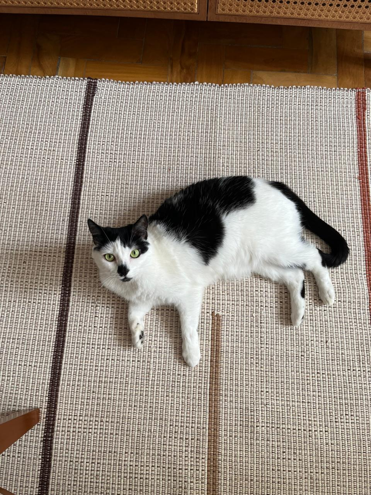
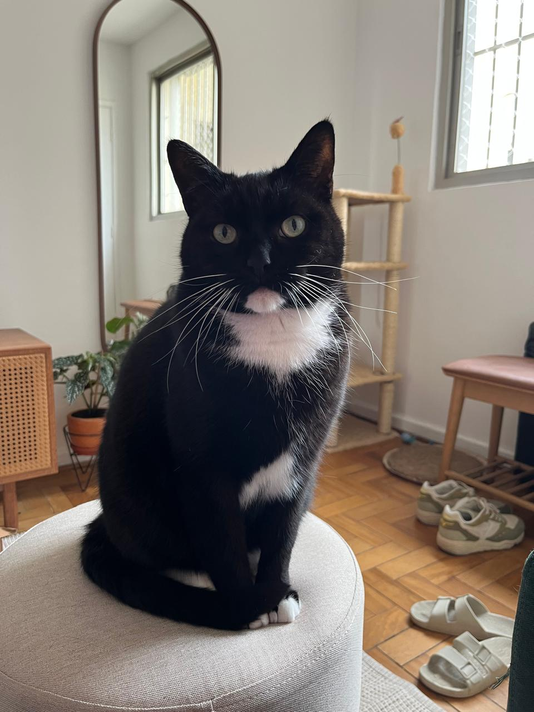
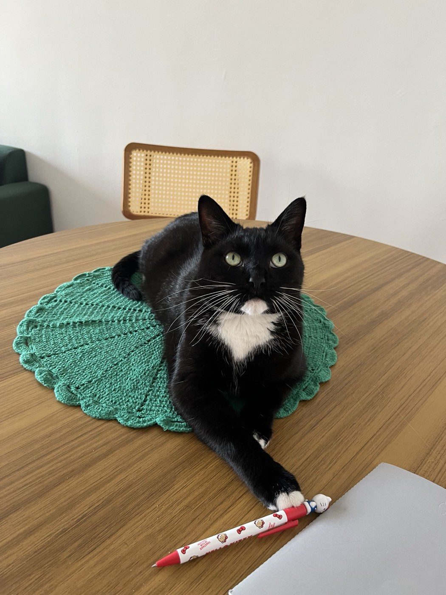
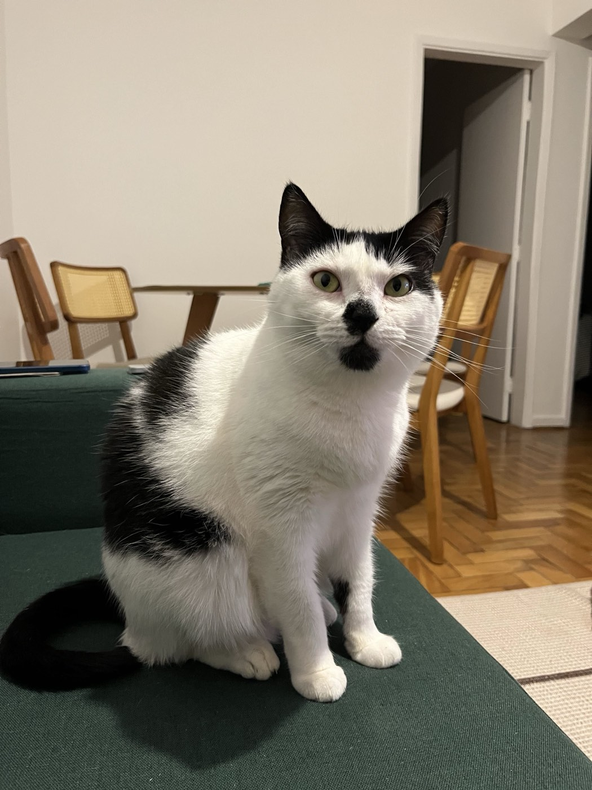
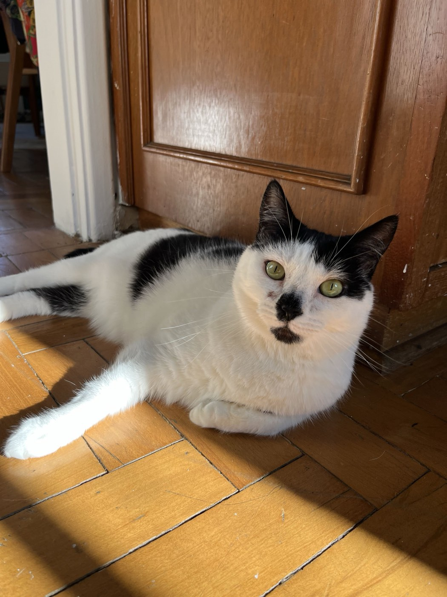
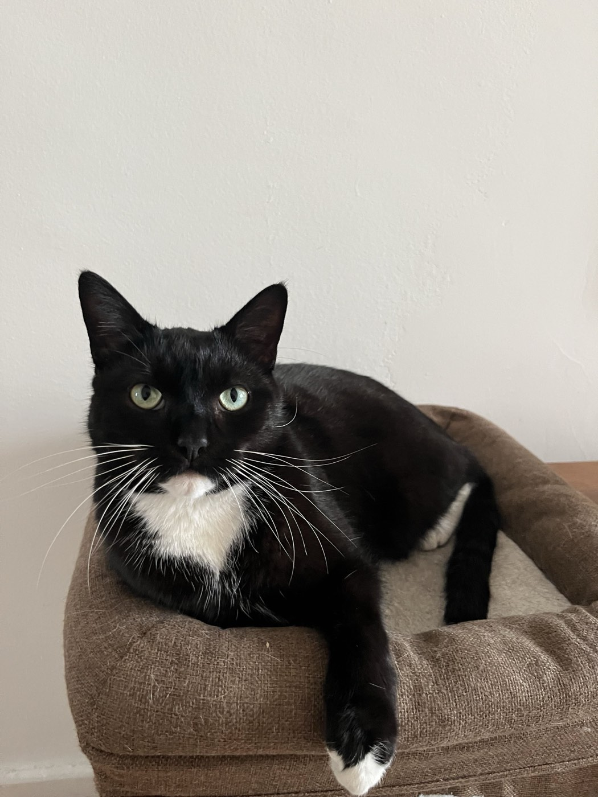
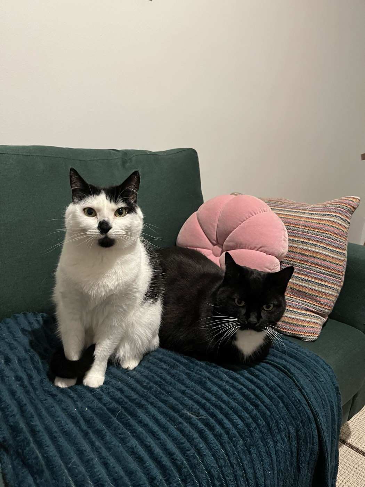
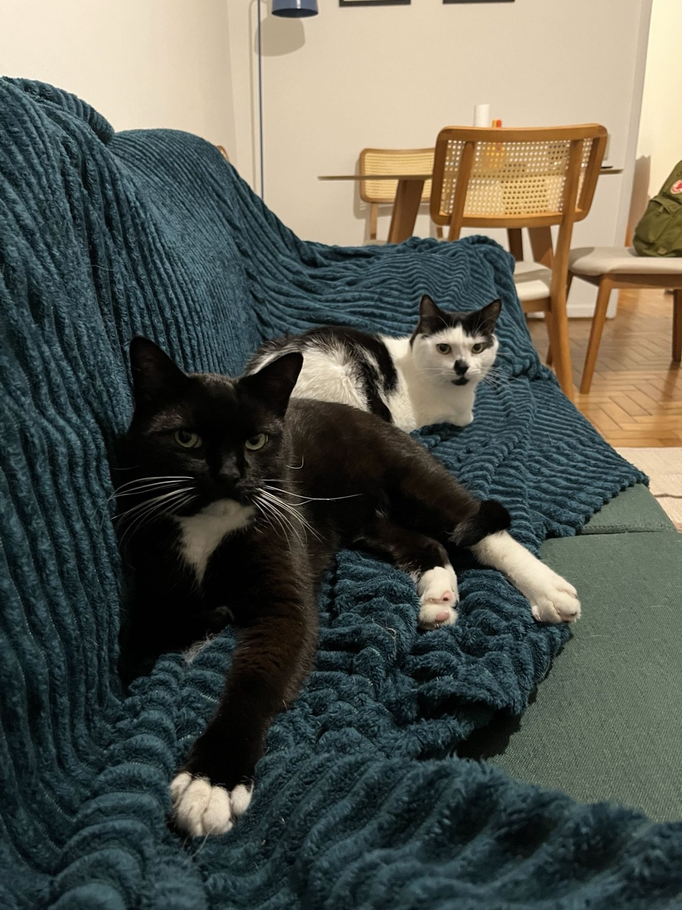

🐱 Lab · in review
Laís
Arata
Essa é uma galeria de fotos do meus gatos, pois eles pisam e merecem uma página apenas para apreciação de suas belezas e fofuras.
🐾 Experiments
Dolores & Patrício







